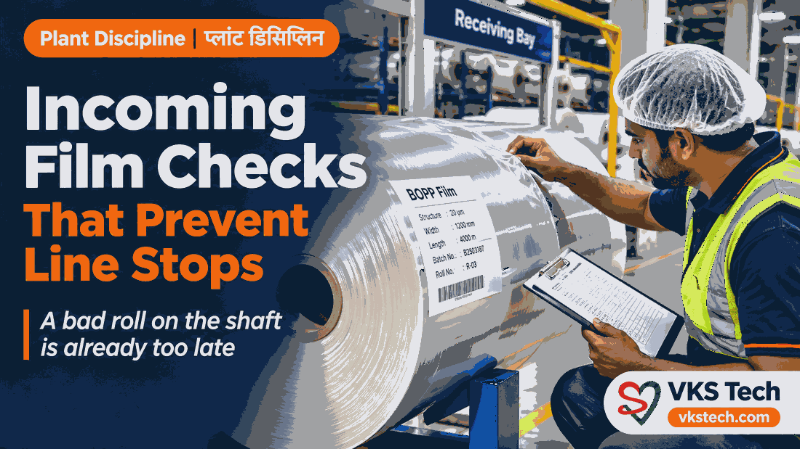
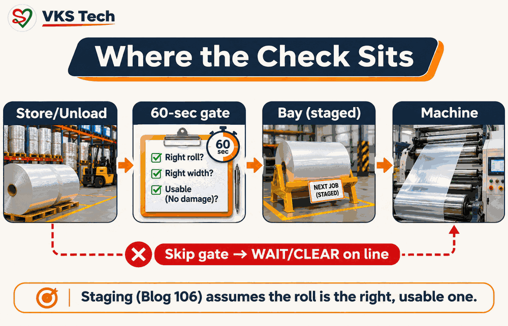
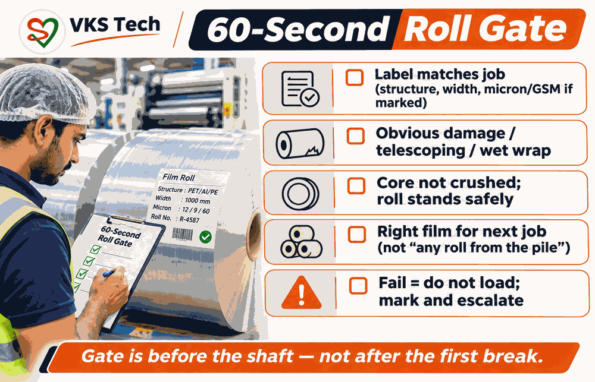
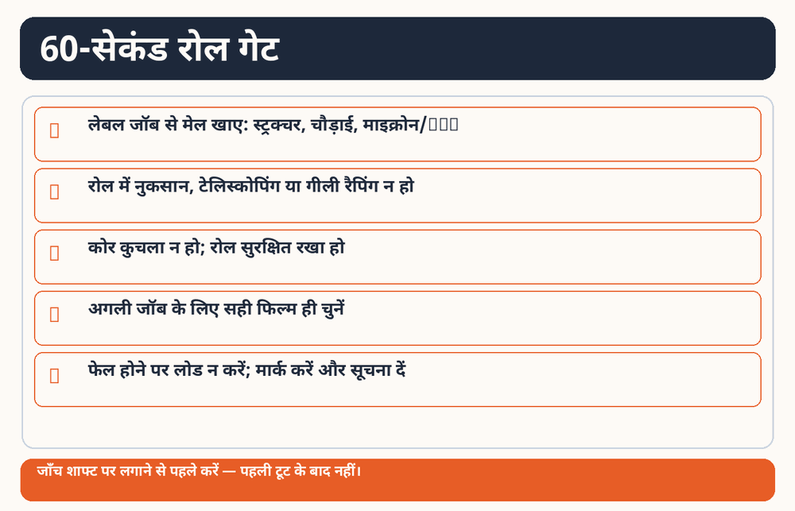
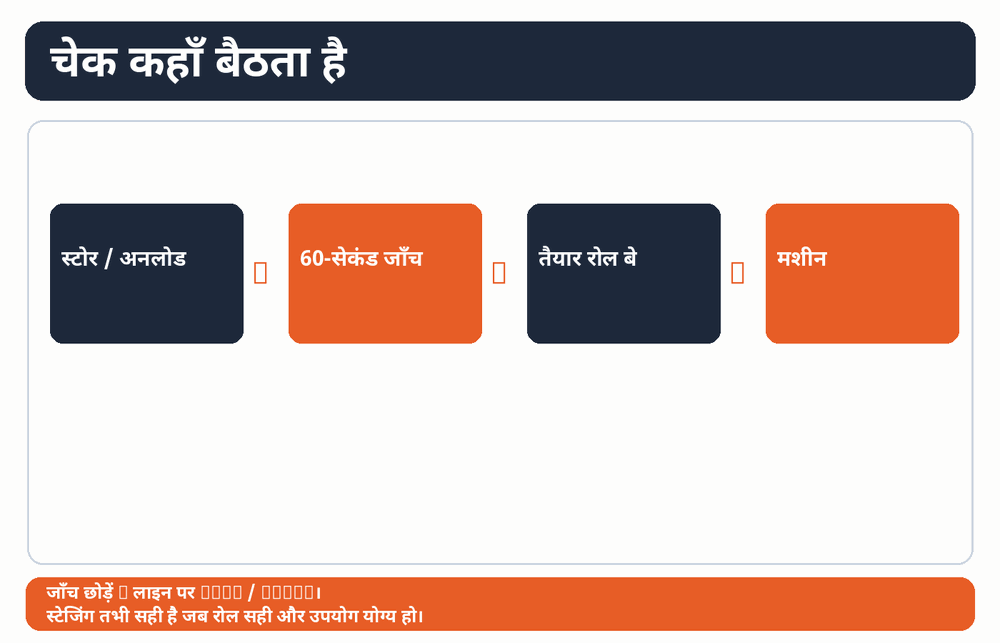

🎬 Incoming Film Checks That Prevent Line Stops
📖 8-min read | Plant Operations | Practical, numbers-first
Many WAIT and CLEAR stops do not start at the panel. They start when the wrong or damaged roll was accepted at the bay and only discovered on the shaft.
By then the machine has stopped, the splice is rushed, and the shift is explaining a problem that a 60-second gate could have caught.
Where the Check Sits

Store / unload → 60-second gate → staged bay → machine.
Staging the next job (Blog 106) assumes the roll is the right structure and usable. Without a gate, staging only moves a future stop closer to the machine.
60-Second Roll Gate

- Label matches the job — structure, width, and any micron/GSM marked for this order
- Obvious damage — telescoping, crushed edge, wet or torn wrap, core collapse
- Safe to handle — roll can stand / move without becoming a safety incident
- Right film for the next job — not “any roll from the pile because it was free”
- Fail = do not load — mark the roll, note the reason, escalate; do not negotiate at the shaft
This is not a full lab incoming inspection. It is a floor gate so the line does not become the inspection station.
One-Week Discipline (One Line or Cell)
- Post the 60-second list at the bay where rolls arrive for the chosen machine.
- Name who gates (helper, material handler, or operator) each shift.
- Tick: gated OK / rejected (one-line reason).
- In the daily meeting: rejects this week + any line stop still caused by a roll that skipped the gate.
- After seven days: one fix only (label discipline, storage, supplier feedback, or training).
Link to Short Stops, Staging, and Waste Board
Short stops (105) — WAIT for “wrong film” or CLEAR after damage often traces to no gate.
Staging (106) — Stage only rolls that passed the gate.
Waste board (108) — “Other” or short-stop scrap sometimes is incoming damage discovered late; name it when true.
Key Takeaway
🎬 इनकमिंग फिल्म चेक जो लाइन स्टॉप रोकते हैं
📖 9-min read | प्लांट ऑपरेशन्स
बहुत से WAIT और CLEAR स्टॉप पैनल से नहीं शुरू होते। वे तब शुरू होते हैं जब गलत या क्षतिग्रस्त रोल बे पर स्वीकार हो जाता है और शाफ्ट पर जाकर पता चलता है।
60-सेकंड रोल गेट

- लेबल जॉब से मैच (स्ट्रक्चर, चौड़ाई)
- साफ दिखने वाली क्षति / टेलीस्कोपिंग / गीला रैप
- संभालने लायक सुरक्षित रोल
- अगली जॉब की सही फिल्म
- फेल = लोड मत करो; मार्क + एस्केलेट
